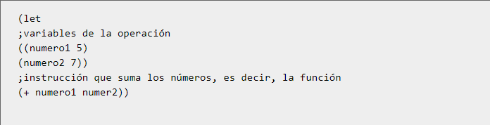

Scheme posee una sintaxis reducida comparada a otros lenguajes. Utiliza la notación prefija. Por ejemplo, si se desea realizar la suma 1+1, se debe programar la siguiente instrucción
Los paréntesis son obligatorios, ya que separan las instrucciones que serán evaluadas por el intérprete. Para realizar comentarios dentro del código, se utiliza el ";", así se marca que toda la línea será de comentario Ejemplo:
Sintaxis Básica
Variables locales y globales
Las variables son dinámicamente tipadas. Dicho de otra forma, no se debe especificar lo que se va a guardar dentro de la misma. Las variables globales se nombran con la instrucción (define nombre valor) Por ejemplo,
Por otro lado, las variables locales se definen con la instrucción ( let variables función). Por ejemplo: sumar dos números guardados en una variable local

Creando Procedimientos Completos
Utilizando la instrucción (define (nombre args) función) se crea un procedimiento dentro del programa. En mi caso, voy a implementar la instrucción del ejemplo anterior en una función
De la misma manera, el procedimiento anterior pudo ser escrito de esta manera:
para llamar a la función creada, se utiliza la orden (función args). Así, para llamar a nuestra función de suma, se escribe:
Simbolos del lenguaje de programación Scheme
Un símbolo es lo que en otros lenguajes se denomina identificador. En Scheme los símbolos e identificadores pueden contener caracteres
internacionales (Unicode, UTF-8). El intérprete DrScheme guarda los ficheros de texto en esa codificación.
| 'hola |
| (symbol 'hola-que<>) |
| (symbol->string 'hola-que<>) |
| 'mañana |
| 'lápiz ; aunque sea posible, no vamos a usar acentos en los símbolos |
| ; pero sí en los comentarios |
| (symbol? 'hola) ; #t |
| (symbol? "hola") ; #f |
| (symbol? #f) ; #f |
| (equal? 'hola 'hola) |
| (equal? 'hola "hola") |
Esqueleto de Scheme
Estructuras de control
En Scheme existe la instrucción cond, con la cual se pueden revisar si se cumplen o no con requerimientos para realizar dicha funcion. Su sintaxis es:
En este caso, el else es opcional
Por ejemplo, si se desea sumar solamente numeros positivos en nuestra funcion de suma, se podría realizar la siguiente implementación
A que tipo de paradigma pertenece?
El lenguaje Scheme tiene determinado como paradigma de programacion el multi-paradigma
Aplicación a descargar para editar y ejecutar
Para utilizar Scheme se necesita descargar el MIT/GNU el cual se puede descargar en el siguiente link: Aqui
Y puedes utilizar un editor de codigo como: Atom, VsCode, etc...
Ejemplo de programa
Factorial de N
1 (define (factorial n)
2 (cond (( < n 0) #f)
3 ((<= n 1) 1)
4 (else (* n (factorial (- n 1))))))